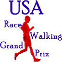

|
Quick Index
Race Walk Clinic with Jolene Moore
Event Hotel
Entry Form
Packet Pickup
|
Twin Cities Race Walkers is proud to host the 2007 USA 15km
Race Walking Championships for Junior and Open athletes.
Along with these
national championship events, the USATF North Region 15km Race Walking
Championships, the USATF Mid-America Region 15km
Race Walking Masters Championships and the USATF/MN Association 15km Race Walking Championships
will be held.
For those interested in a shorter distance, a 3km race walk open to everyone
will be held shortly after the completion of the 15km.
Prior to the racing, Jolene
Moore, a member of the USA Race Walking team and a professional
coach, will give a race walk clinic.
|
|
|
|
|
 |
The USA 15km
Race Walking Championships is part of the
USA
Race Walking Grand Prix, a season long competition combining results from 13
different competitions, across a range of distances from 1 mile to 50km. |
Race Walking Clinic with Jolene Moore
|
This clinic is open to all race walkers. Jolene Moore, a member of
the USA Race Walking Team and a professional coach will lead the clinic.
If you are a new race walker trying to make sure you have the basics
straight, or if you are en experienced race walker striving to improve
to the next level of performance, Jolene will give you the tools to
improve on your own and some observations about your own race walking
style. Most of us are self coached race walkers. This clinic is an
opportunity to learn from someone that can talk the talk (a professional
coach), but also someone that has walked the walk (current member of the
USA Race Walking team).
FRIDAY - meet at the home of Bruce Leasure,
638 Summit Ave, Saint Paul, MN
6:00pm Registration
Introductions and Icebreaker
Pasta Dinner
7:00pm Lecture while people are eating potluck
- Philosophy of training (hard days and easy days etc.)
- Aerobic versus Anaerobic training
- Recovery
- Stretching, core and strength training
- Nutrition 101 – for athletes
- Goal Setting
- Race preparation
8:30pm Questions and informal wrap up
SATURDAY - meet at Central Park in Roseville, MN.
Go to the
2540 Victoria St N, Roseville, MN and park on the west side of
Victoria. We will be using paths between Lexington Ave and Victoria St.
This park contains the path that we hope to use for next year's 15km. No
sharp corners. A water fall. A nice walk around a lake.
9:00am-Noon Hands-On clinic day
- Warm up
- Stretching
- Race walk mobilization exercises
- Technique drills
- Individual evaluation for each participant
Cost: $60 - register on the entry form.
|
Course
|
We've moved the entire course 500m west from last year, so that the
start/finish is adjacent to the event hotel.
Our USATF Course Certification is for the new course will be available
soon.
A 2km loop on a straight, flat, smooth, asphalt section of the
Greenway Trail with no road crossings and no vehicle traffic. The
Greenway Trail used to be a rail road track going into the heart of Minneapolis. The
trail is below grade, with an overpass at every block, providing ideal locations
for spectators, and keeping traffic and exhaust well away from the course.
Details |
Event Hotel
|
Sheraton Minneapolis Midtown
Hotel
2901 Chicago Avenue South
Minneapolis, MN 55407
(612) 821-7600
|
.$99/night if reserved by July 27
Reserve online:
http://www.starwoodmeeting.com/Book/USA15km
Starting line is adjacent to the event hotel. |
|
|
Need a roommate to reduce expenses?
Drop us an
e-mail and we'll try to put you in touch with someone else that does
too. |
Entry Form
|
This year there is a combination of online registration and mail-in
registration. Please fill out this on-line
entry form and press the "register by email" button, then print out
a copy and mail with your check. |
Health Notice |
Weather can be hot and humid and dehydration is a
danger. Please hydrate properly prior to, during and after the race.
Water and electrolyte replacement sports drink will be available on the
course for all participants. 15km athletes may bring their own
food/hydration for consumption during the race. |
Packet Pickup
|
At the event hotel on Saturday
August 18 from 3-7pm
At the starting line at least 15 minutes prior to your event. |
Registration
|
Pre-Register by August 10, 2006 by mailing a completed
entry form and check to
Twin Cities Race Walkers
638 Summit Ave.
Saint Paul, MN 55105-3435
On-Site Registration: at the event
hotel on Saturday August 18 from 3-7pm.
Race-Day: There is no race day
registration |
When
|
August 19, 2006 - 15km start time is 7:30am - 3km start
time is 9:30am. Mark your calendars: the USA 15km Race
Walk Championships will be held on August
17, 2008. |
Who is Who
|
Race Director
|
Bruce Leasure Twin Cities Race Walkers
651-330-9355
email: info "at" twincitiesracewalkers.org |
|
Elite Athlete Coordinator |
Dave Daubert
Twin Cities Race Walkers
952-446-9321
email: tonkatails "at" aol.com |
|